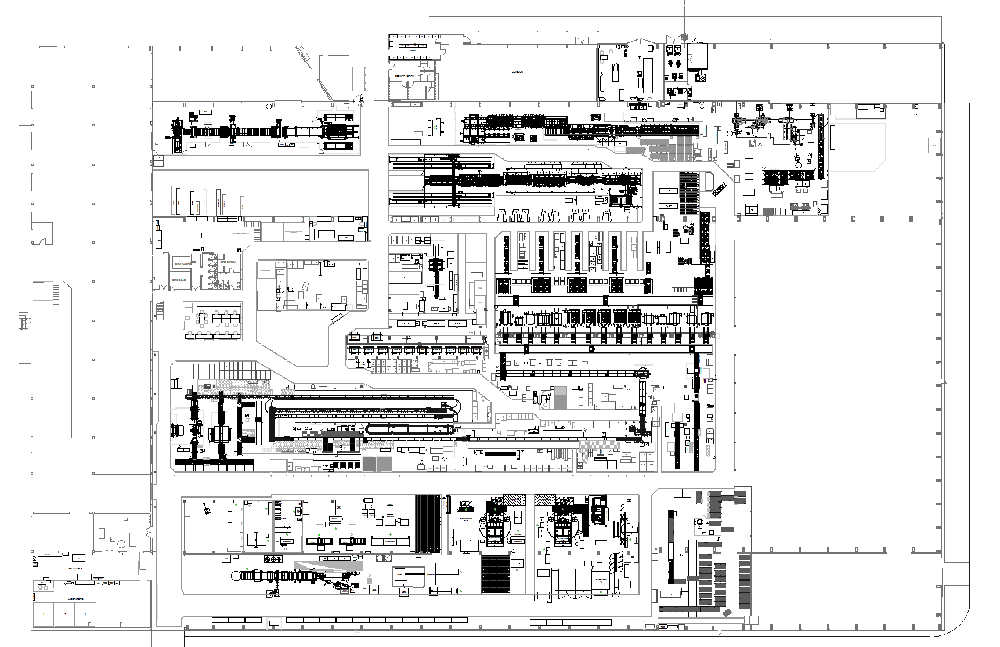

Panel general de Procesos
Desde este inicio podés acceder a las distintas áreas de la planta, consultar el diagrama de flujo general y entrar a las hojas de proceso, novedades y calendario asociados.
Áreas de Producción y Soporte
Accesos directos a las áreas con sus procesos, documentos y herramientas específicas.
Línea Horizontales
Armado, Equipado, Control y Embalaje de horizontales.
Línea Verticales
Producción de exhibidoras y heladeras de 1f y 2f.
Plástico
Extrusión, Termoformado, Corte y Abastecimiento de piezas plásticas.
Chapería
Corte, Punzonado y Plegado de piezas metálicas y Sector de Capilares.
Subensamble
Armado de UC, Forzadores, Evaporadores y Conjuntos Eléctricos.
Puertas
Armado y Espumado de puertas para Heladeras y Freezers.
Layout de Planta 2025

Hacer click sobre el plano para abrirlo en grande y usar zoom / desplazamiento.